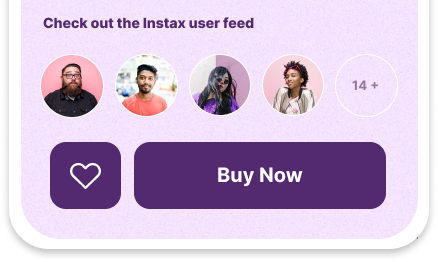
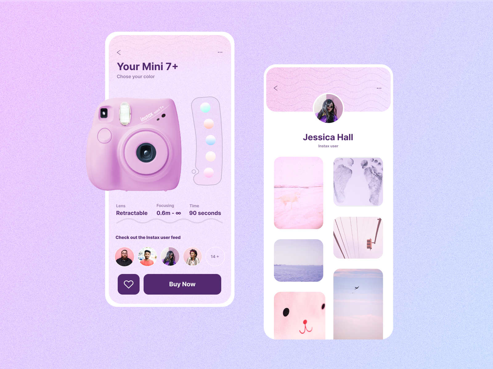

Overview
App for Instax is a product information page and platform for Instax users. Having a collection of photos, the user can also share them online. This provides the user with a pleasant experience of watching others share art and gives them the opportunity to show their creativity as well.
The user is provided with a brief overview of the product. There is a mogel on top, giving a visual representation of the product. You can also select the color of the camera with the switch. You can also use the arrow to go to the model selection page and (...) select the menu.
Ambassadors are also presented below on the page, you can easily go to the profiles by clicking on their photo. Then you can add a certain product model to your favorites by clicking on the heart and also buy by clicking on the button (Buy now)
If we go to the Instax user profile, we can see a photo with constant photo updates. Users can not only share photos, but also get inspired by others and arrange photo challenges.
Understanding
Exploring The Data
Instax is a brand of instant still cameras and instant films marketed by Fujifilm. The first camera and accompanying film, the Instax Mini 10 and Instax Mini film, were released on November 10, 1998. The "Wide" film and first accompanying camera were released the following year. The Instax Square film and accompanying camera were released in 2017. Especially popularity grew in 2020-2022 after the use of cameras by bloggers.
As you can see, the history of Instax is incredibly rich. Almost every year the company pleases users with new models of instant cameras and printers. And if at the initial stage the devices could be purchased only in large cities, for example, Moscow or St. Petersburg, today the Instax line is presented in all well-known electronics stores from Vladivostok to Kaliningrad.
Famous bloggers, photographers, artists and actors who actively use gadgets in everyday life, work and creativity play an important role in the popularization of instant cameras. However, it is worth noting that the Instax audience is rather narrow, since it is not a mass market in the usual sense of the word. But at the same time, due to the low price of instant cameras, almost all connoisseurs of film photography can afford to buy.
Instax plans, of course, to develop new models of cameras and instant printers that can surprise even the most demanding photographers. The use of modern technologies allows Instax to always remain in trend, without losing its "lamp" and special charm.
Technical task
As the popularity of the brand grows, it is necessary to create a user-friendly product that will not only be innovative, but also interactive and pleasant for the user..
My task was to create a design for an application where you can choose any camera model to buy. And also create a camera user profile page..
After the user takes a photo, the user, as a result, has not only a physical photo, he also has the opportunity to digitize the photo and share it in the Instax profile.
Target Audience
After an initial understanding of the data, we decided which audience we were targeting.
- Students in the photography studio are interested in the modern history of photography
- People with no photo education who are interested in art
- Adolescents aged 11 to 20 years
- Youth aged 21 to 31
- Bloggers
A key feature of the target audience is the mix of photography novices and experts, which requires design to strike a balance between clear visualization and in-depth knowledge.
Design Process
Brainstorming & Sketching
At this stage, it was necessary to retreat in order to think and roughly sketch out the concepts. At this stage, I focused on effective design and sketched out ideas and solutions.
Design and color selection
After the exact detailing of the elements, I had to decide on the colors. I decided to design a page for Your Mini 7+ cameras. I had 5 options.

I opted for the pink model. The pink color seemed to me the most suitable and inspiring for the application. It cheers up the user and calms.
Result
This is the final design I got. I'm satisfied with the result)
 < Back to Projects